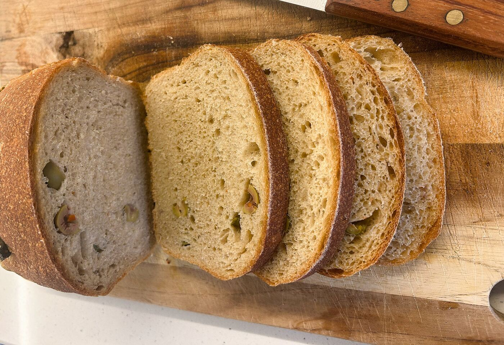

From the oven to your table
We bake bread to be eaten fresh, not to spend days waiting on a shelf. Small batches and baking close to delivery help it reach your table sooner.

Small-Batch Bakery
European-style breads, buns, and sweet bakes made in small batches with slower fermentation and simple ingredients.
Our Philosophy
We bake bread to be eaten fresh, not to spend days waiting on a shelf. Small batches and baking close to delivery help it reach your table sooner.
We use real, familiar ingredients and name them plainly. Our lists stay clear and complete, so you know exactly what you are eating.
Why TRANCHÉ
We bake without preservatives or commercial improvers, using slower fermentation and small production batches instead of factory-style processing.
Every product page shares its ingredients, flour balance, and enrichments, so you can choose bread with a clear idea of what is in it.

Browse The Range
Start with a softer everyday loaf, choose a more grain-forward bread, or explore the richer flavors in our signature range.

Everyday Loaves
Versatile breads with a softer crumb for toast, sandwiches, breakfast plates, and the bread basket.

Whole Wheat & Seeded Loaves
Choose a softer 50% whole wheat loaf, a heartier 80% bread, or a seeded loaf with deeper toasted flavor.

Real breads, baked and photographed in-house.

Signature Loaves
Olive, walnut, honey, and other loaves bring deeper flavor, richer textures, and a more expressive bakery character.

Rolls & Buns
Whole wheat rolls, softer milk buns, burger buns, and specialty rolls baked for breakfast tables, sandwiches, and café-style meals.
From The Kitchen
This is the light educational layer on the homepage. As more dough, shaping, and equipment images are ready, this section can become more process-led.
Denser, grain-forward breads are part of the range, not something that needs a long defense at the top of the homepage.
Ingredient philosophy, fermentation, shelf life, and bread behavior now move into About and FAQ instead of interrupting browsing here.
Message us on WhatsApp and we’ll guide you through the available breads, delivery day, and payment.